Overview
This is a rasterizer - given a set of coordinates will render an image to a flat screen. These coordinates can exist in a 3D space.
Section I: Rasterization
Part 1: Rasterizing single-color triangles
Primitive shapes are the cornerstone of computer graphics, especially in 3D modeling. The most valuable primative is definitely the triangle. What makes the triangle so great? Well it is the most basic polygon with a well defined interior. Its three vertices guarantee it will be planar, making self-intersection impossible. Triangle rasterization is a core function in the graphics pipeline to convert input triangles into framebuffer pixel values.
In Part 1, triangle rasterization was implemented using Barycentric coordinates. Given three (x,y) coordinate points, we determine the bounding box we need to check, which is accomplished by finding the max and min values for the x and y values. Using Barycentric coordinates (which wasnt necessary for this section) helped for the later sections. These coordinates could be thought of as weights, and can determine if a point was inside a triangle. So for any coordinate (x,y), if the alpha, beta, and gamma values were greater than 0 and less than one, then we have a winner.
|
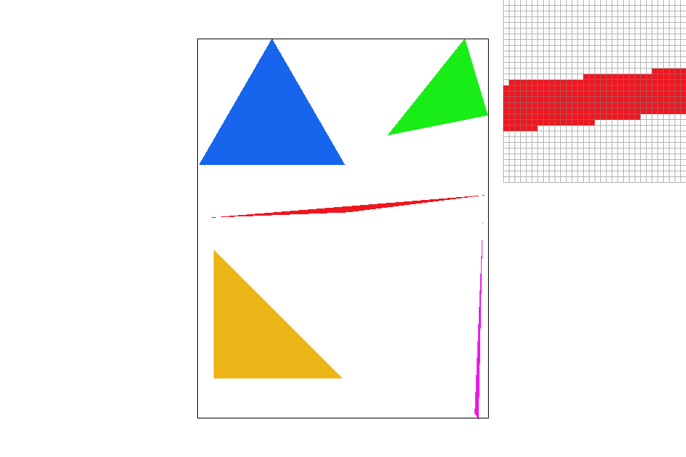
|
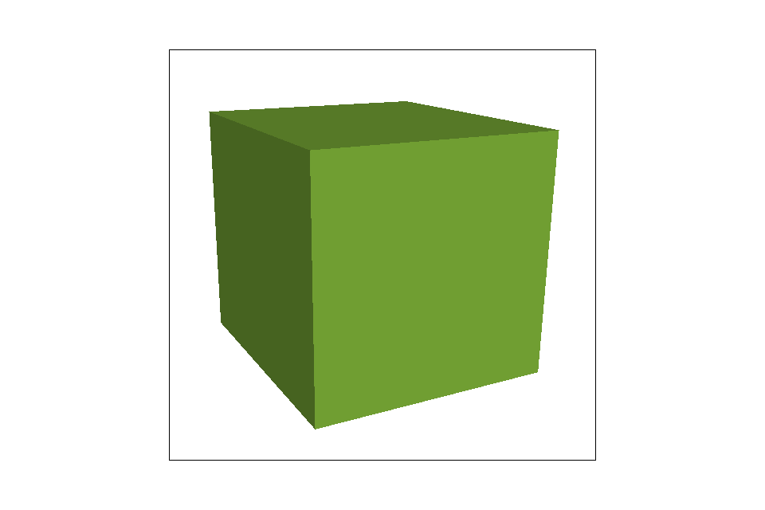
|
Fantastic! We have the basics down. However, you may have noticed that these shapes seem rather jagged. These artifacts are due to a low-sampling rate, and are referred to as jaggies. How fix?
Part 2: Antialiasing triangles
Aliasing is a common problem in digital conversion that can be resolved through supersampling. In audio, a low sample rate that processing audio can return the wrong sounds, and the fix is to just increase frequency and sample at a higher rate. The same concept applies in graphics.
In this project, the sample_rate perameter was adjustable to increase the frequency. Consider a pixel, and for the sake of convenience it is a square. This square pixel can contain subpixels, each of which may contain a different color value (whether it be a slight or big difference). The idea of supersampling is to take these subpixels and average out a color to give the entire pixel. If they all cant be represented on screen, this serves as a sort of compromise that balances out jaggies. The only real modification made was that for any pixel I was examining, I made sure to examine its subpixels and create an average color based on those values.
|
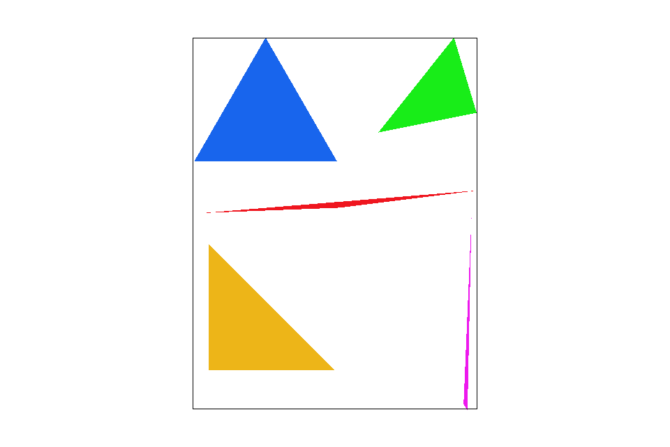
|

|
|
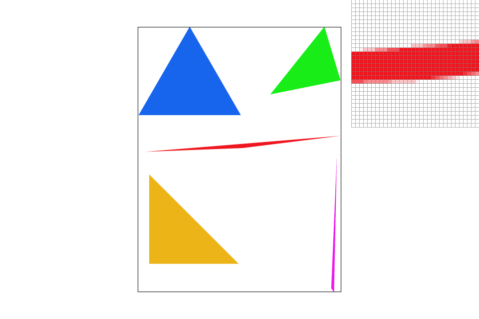
|
Part 3: Transforms
The artist tried making cubeman a little more colurful, and scale down the leg proportions. Additionally, cubemans right art has been rotated to make a waving gesture as well as its head.
|
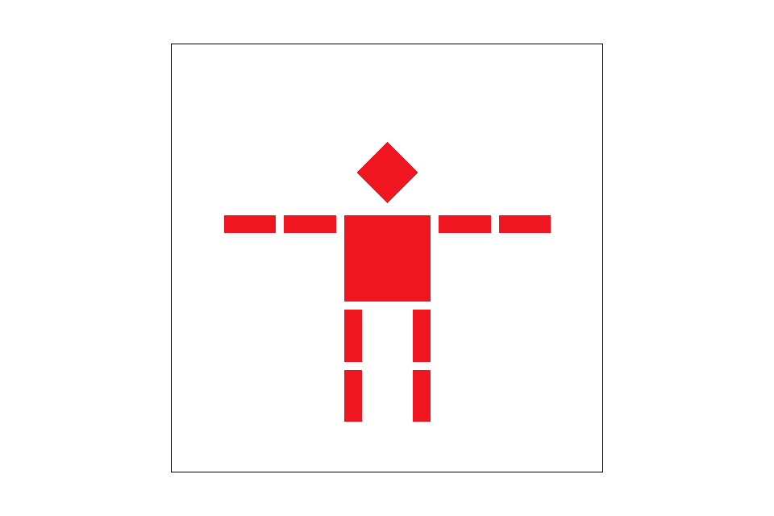
|
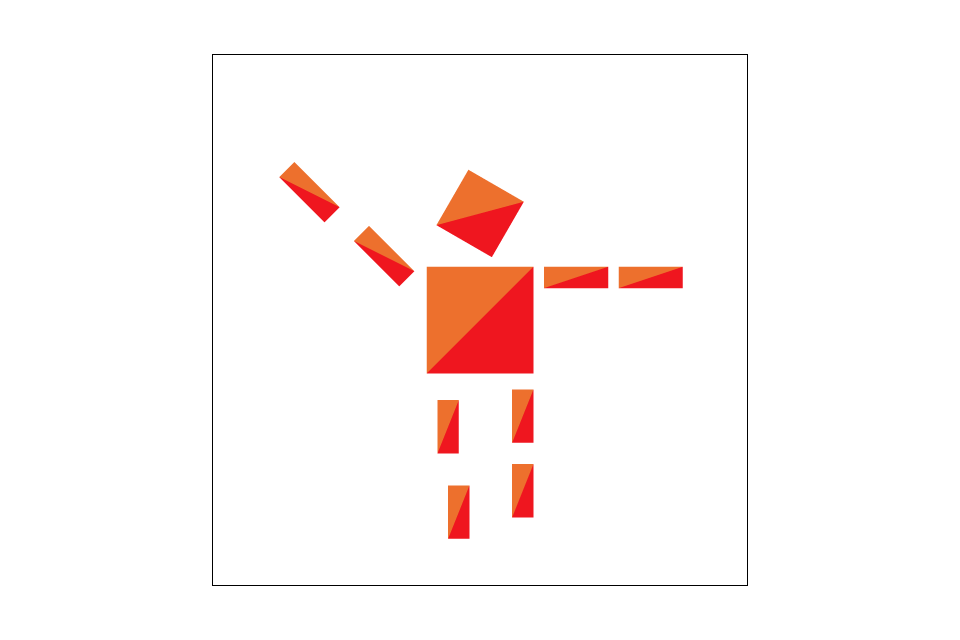
|
Section II: Sampling
Part 4: Barycentric coordinates
As mentioned in Part 1, Barycentric coordinate (alpha, beta, gamma) can be thought of as weights. These weights are quite versatile. They can determine if a point lies within the boundaries of a triangle, or determine an average color, and even texture coordinates (more on that in the next section!)α, β, and γ serve as weights and their sum should add up to 1. Consider vertex A. At that point, the values of the barycentric coordinates will be α = 1, β = 0, and γ = 0 because at that exact point A, there is only one weight determining the value and it is that of A. In a sense the influence of the other points fluctuate with proximity.
|
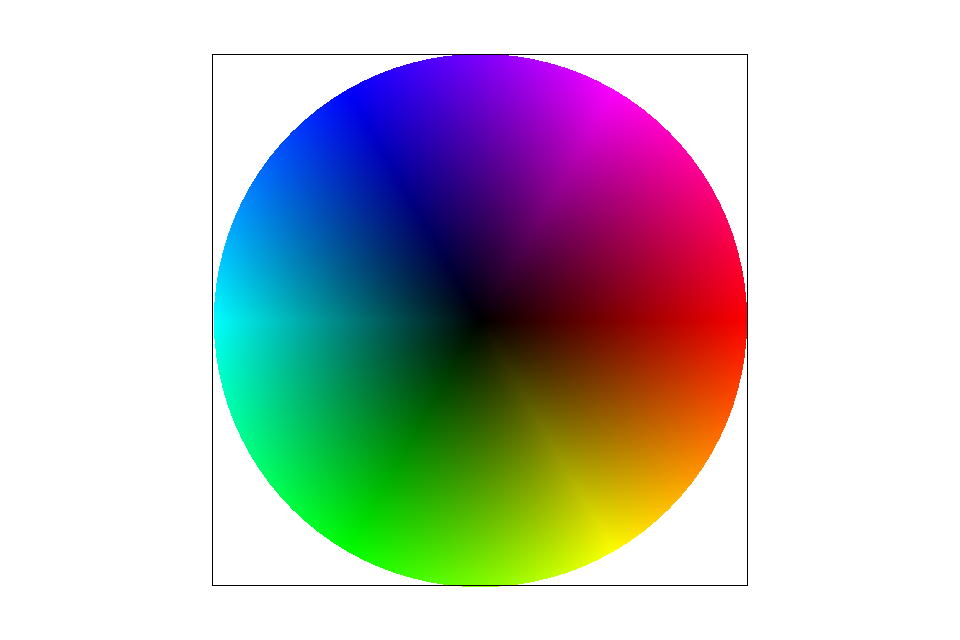
|
Part 5: "Pixel sampling" for texture mapping
Pixel sampling is image scaling that will interpolate colors depending on the technique. There are two at hand; nearest neighbor and Bilinear. Nearest neighbor sampling - given a (U,V) coordinate, scale this point but the mipmap’s width and height. Locate the texel at this point and scale it with the MipLevel and return the interpolated color. Bilinear sampling - given a (U,V) coordinate, find its neighboring points around it. Interpolate a color based on these points and return it.
Here is test6.svg in quite a number of sample rates. The winner (but barely) is bilinear sampling, of course. In the case of the third figure, (nearest sampling, sample rate 16) when compared to the fourth figure (bilinear sampling, sample rate 16), it still seems a little more jagged.
|
|
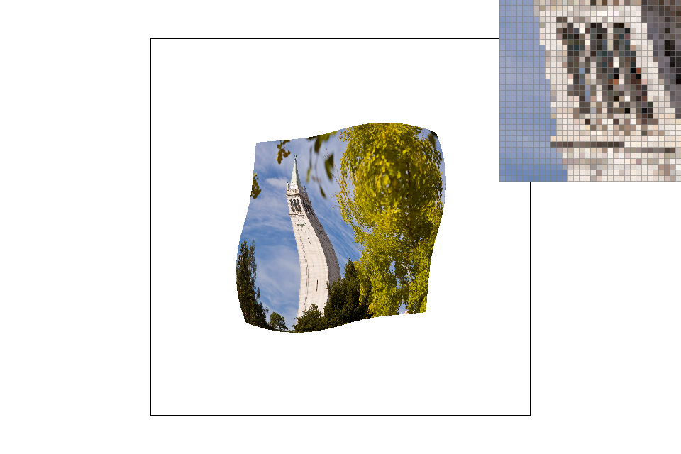
|
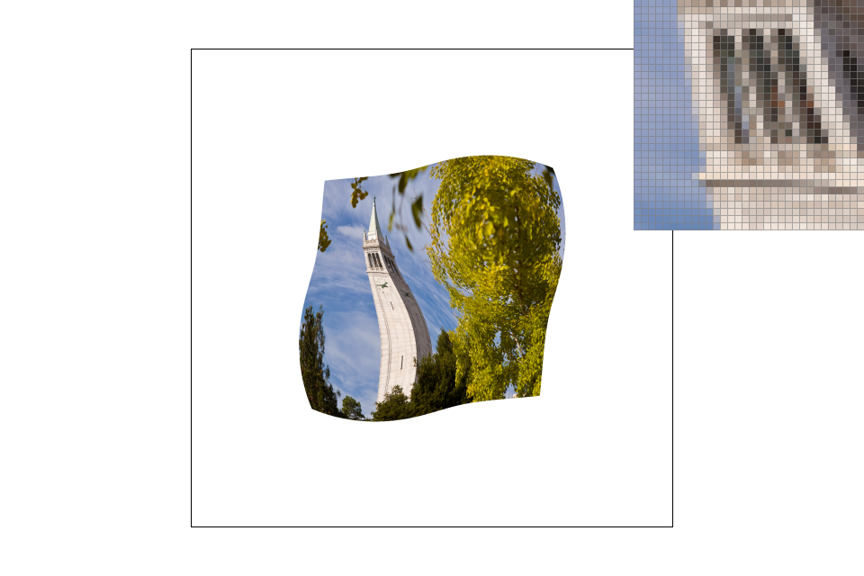
|
|
The more apparant differences between the two techniques occur with images with sharper edges. Given a certain point, if the neighboring points are similar, then there is really not need to resort to a bilinear sampling. In this case, the techniques could be interchangable. As in the examples I outlined, the contrast between the campanile and the sky looks smoother in the bilinear output, where that technique would be necessary.
Part 6: "Level sampling" with mipmaps for texture mapping
Level sampling is sampling done on different mipmap levels.
In order to get the right mipmap level, (dudx,dvdx)(dudx,dvdx) and (dvdx,dvdy)(dvdx,dvdy) are needed. In order to get these values corresponding to a point p=(x,y) inside a triangle, the barycentric coordinates of (x+1,y)(x+1,y) and (x,y+1)(x,y+1)need be calculated in rasterize_triangle, setting them as the variables p_dx_bary and p_dy_bary. The uv coordinates sp.p_dx_uv and sp.p_dy_uv need be calculated. The difference vectors sp.p_dx_uv - sp.p_uv and sp.p_dy_uv - sp.p_uv are scaled up those difference vectors respectively by the width and height of the full-resolution texture image. THe level is computed by the log of the max vector.
Using this texture, here are some texture map samples! 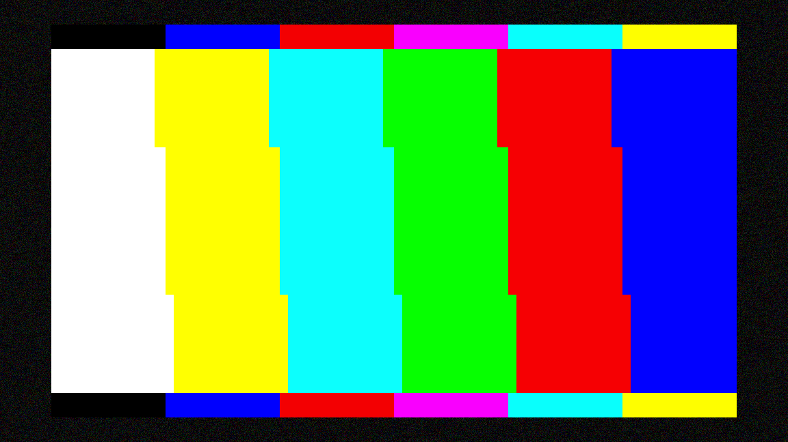
|
|
|
|
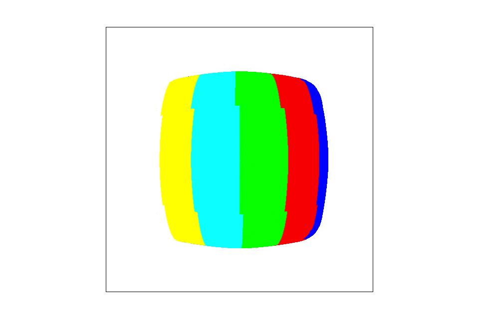
|
Unfortunatly, there are only slight differences.
Section III: Art Competition
If you are not participating in the optional art competition, don't worry about this section!